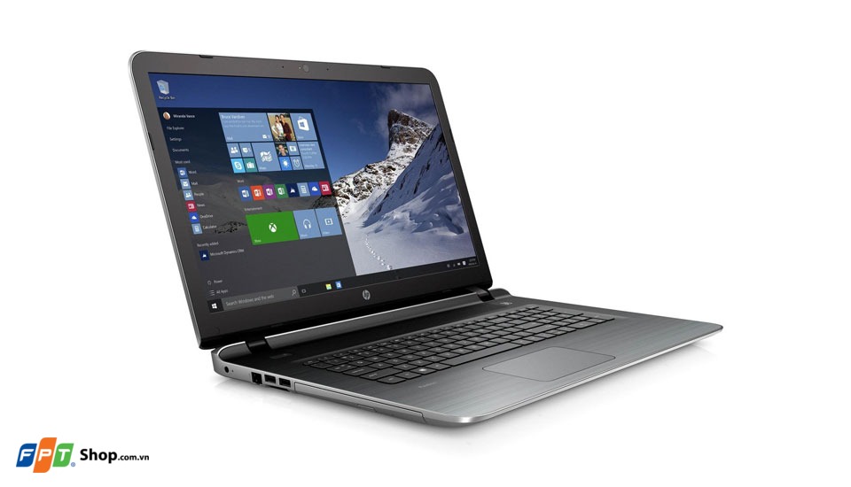

HP 14-ac144TU là một chiếc laptop đa chức năng, sử hữu một thiết kế thanh lịch, thời trang nhưng không kém phần mạnh mẽ với bộ vi xử lý Intel thế hệ thứ 5 Broadwell. HP 14-ac144TU trở thành sản phẩm mà người dùng chắc chắn không thể bỏ qua khi lựa chọn một chiếc laptop phổ thông.
Thiết kế nhỏ gọn, di chuyển dễ dàng
HP 14-ac144TU là chiếc laptop có trọng lượng nhẹ cùng thiết kế nhỏ gọn, giúp người dùng có thể di chuyển một cách dễ dàng. Máy được làm từ chất liệu nhựa cao cấp, cùng sự chế tác tỉ mỉ, hoàn hảo, cùng độ hoàn thiện ở mức cao tạo cho máy có cảm giác vô cùng sang trọng và chắc chắn, không hề có cảm giác ọp ẹp, tránh những hư hỏng trong quá trình sử dụng. Với sự kết hợp màu sắc tinh tế cùng những đường cong sắc sảo, tổng thể của máy mang lại một cảm giác vô cùng sang trọng, thu hút ánh nhìn ngay từ lần gặp đầu tiên.
Cấu hình mạnh mẽ với bộ vi xử lý Intel
HP 14-ac144TU được trang bị bộ vi xử lý Intel Core i3-5005U thế hệ thứ 5 Broadwell xung nhịp 2 GHz, kết hợp với RAM 4GB. Với cấu hình như vậy, máy dễ dàng chạy các ứng dụng nặng nề, khả năng đa nhiệm mượt mà, đòi hỏi sự xử lý nhiều nhưng vẫn đảm bảo cho máy có một thời lượng pin tốt, bền bỉ. Ngoài ra, khả năng lưu trữ dữ liệu, hình ảnh hay video của máy cũng rất đáng nể nhờ việc trang bị ổ cứng HDD có dung lượng lên tới 500GB, cho phép lưu trữ tất cả mọi thứ một cách thoải mái.
Màn hình 14” HD LED
Điểm nổi bật tiếp theo trên HP 14-ac144TU chính là màn hình. Máy sở hữu màn hình có kích thước 14”, độ phân giải HD 1366x768 pixel và sử dụng tấm nền LED. Hình ảnh thu được từ màn hình có màu sắc rực rỡ, chi tiết tốt và độ sang cao, giúp người dùng có thể trải nghiệm tuyệt vời hơn các thước phim bom tấn hay những trò chơi đặc sắc. Mọi thứ đều được thể hiện một cách chân thực và sống động nhất với màn hình của HP 14-ac144TU.
Bàn phím cho trải nghiệm gõ tốt, Touchpad rộng rãi
Các phím bấm trên HP 14-ac144TU có kích thước lớn, được sắp xếp một cách hợp lí và độ nảy tốt giúp người dùng có thể sử dụng thoải mái và cho khả năng nhập liệu chính xác. Trong khi đó, với Touchpad có kích thước lớn, người dùng dễ dàng thao tác trong một không gian rộng rãi, các tác vụ kéo thả, rê chuột được thực hiện một cách nhanh chóng và dễ dàng giống như chuột rời.
Đa kết nối
HP 14-ac144TU sở hữu đầy đủ các chuẩn kết nối thông dụng như Bluetooth, WiFi chuẩn ac, HDMI cùng USB 3.0 cho khả năng truy cập dữ liệu ở tốc độ cao, đáp ứng nhanh chóng yêu cầu của người dùng. Ngoài ra, với thời lượng pin tốt, máy còn cho khả năng hoạt động bền bỉ trong thời gian dài. Với tất cả những điểm nổi bật trên cùng mức giá dễ chịu, HP 14-ac144TU trở thành chiếc laptop hoàn hảo để người dùng lựa chọn.